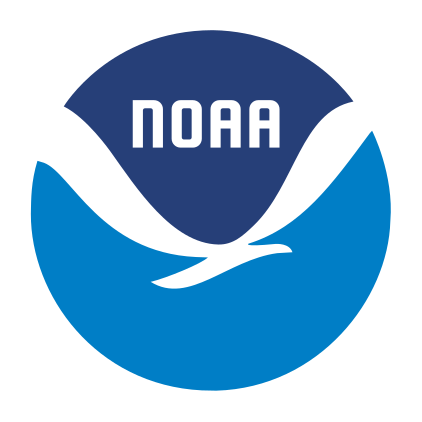
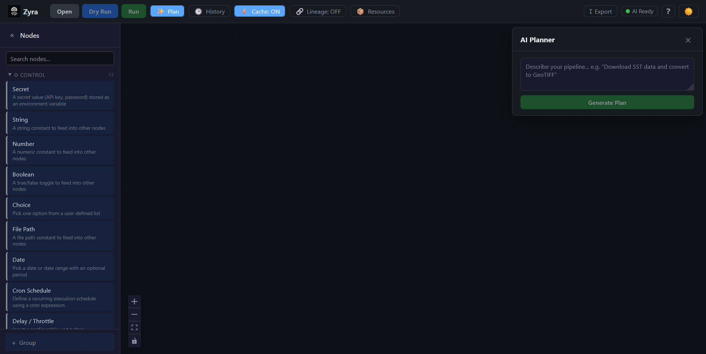

A Visual Node Editor for Scientific Data Pipelines
Drag, connect, and run data processing workflows — powered by the Zyra framework. A manifest-driven visual interface for orchestrating CLI pipelines in the browser.

Scientific Data Workflows
Turning raw observations into actionable products requires a chain of acquisition, processing, visualization, and dissemination steps — often spanning dozens of tools, formats, and protocols.
Workflows at NOAA's Global Systems Laboratory
GSL produces operational weather products, experimental forecasts, and research datasets. These workflows run daily — often involving dozens of steps across heterogeneous tools, formats (GRIB2 NetCDF), and protocols (S3 FTP HTTP).
Scientists spend time writing shell scripts, cron jobs, and glue code instead of doing science.
Ad-hoc scripts are hard to version, share, and reproduce across teams and environments.
Pipelines span multiple tools, formats, and protocols with no unified view of the entire workflow.
Built on the Zyra Framework
Zyra is a CLI-first Python framework for acquiring, processing, visualizing, and narrating scientific data. The Editor brings that power to a visual interface.
Scientific workflows span heterogeneous data sources — HTTP FTP S3 APIs — and diverse formats like GRIB2 NetCDF GeoTIFF. They require repeatable transformation chains and produce outputs ranging from static maps to interactive visualizations.
Zyra standardizes these steps into a modular, CLI-driven pipeline.
Every stage streams via stdin/stdout for Unix-style composition.
Three layers of access — CLI, Python API, and MCP — all share the same pipeline architecture.
The Editor drives the CLI directly via a lightweight FastAPI server.
The Pipeline: 8 Composable Stages
Use only what you need. Each stage streams via stdin/stdout for Unix-style chaining. These are the building blocks the editor lets you wire together visually.
zyra acquire
Search and fetch datasets from HTTP/S, S3, FTP, and REST APIs with parallel downloads and resume support.
zyra process
Decode, subset, reproject, and convert between GRIB2, NetCDF, and GeoTIFF formats via streaming transforms.
zyra render
Produce static maps, animated sequences, and interactive plots from processed data.
AI-driven
AI-generated captions, spoken narration, and summary reports for visualizations.
zyra verify
Run quality checks, metadata validation, and compliance tests before dissemination.
disseminate
Push final products to S3, FTP, Vimeo, local filesystem, or HTTP POST endpoints.
Stages are composable — pipe any stage's output directly into the next. The editor turns these CLI stages into visual nodes you can drag, connect, and configure.
How the Editor Works
The editor reads a manifest from the Zyra CLI, presents stages as draggable nodes, and exports your visual graph back to executable pipeline YAML.
The Zyra CLI exposes a manifest — a JSON document describing every available stage, its arguments, input/output ports, and type constraints. The editor loads this manifest and transforms it into an interactive canvas.
Users browse stages in the Node Palette (grouped by category), drag them onto the canvas, and connect ports to form a directed acyclic graph. The editor enforces type-safe connections — only compatible port types can link.
When you're ready, the graph is topologically sorted and serialized to pipeline YAML — the same format the Zyra CLI consumes. You can also import existing YAML files back into the visual editor.
Monorepo Structure
| Package | Path | Role |
|---|---|---|
@zyra/core |
packages/core/ |
Zero-dependency TypeScript library — graph types, port validation, pipeline serialization |
@zyra/editor |
packages/editor/ |
React 18 + Vite visual editor UI using XYFlow (React Flow) |
| Server | server/ |
FastAPI backend — proxies the Zyra CLI, runs async jobs, streams logs via WebSocket |
Key Features
Everything you need to visually build, configure, execute, and export scientific data pipelines.
Browse stages in the Node Palette — grouped by category — and drag them onto the canvas. Connect input and output ports to wire your pipeline.
Ports carry type information (file, url, json, etc.). The @zyra/core library validates compatibility — only matching types can connect.
Select any node to configure its CLI arguments via the detail panel. Supports text, numbers, booleans, file paths, dropdowns, and cron expressions.
Run pipelines against the Zyra backend with WebSocket log streaming. Watch per-node status indicators update live as stages execute.
Topological sort converts your visual graph to structured pipeline.yaml via graphToPipeline() — ready for the Zyra CLI.
Load existing pipeline.yaml files back into the visual editor. Round-trip between visual design and CLI execution.
Describe what you want in natural language — the Planner Panel generates a pipeline plan, translates it to a visual graph, and lets you refine it.
Track execution history with timing visualization. See which stages ran, how long they took, and whether they succeeded or failed.
Define reusable pipeline resources — URLs, file paths, credentials — and reference them across nodes for cleaner, DRY pipeline definitions.
Delay, cron, conditional, and loop nodes for orchestration logic — build complex scheduling and branching directly in the visual graph.
Secret node values are AES-256-GCM encrypted at rest via Web Crypto API. Never written to pipeline YAML — only env var names are persisted.
Toggle between light and dark themes. The editor adapts all node colors, panels, and the canvas background to your preference.
Try It Live
The editor is embedded below. If it's not loading, start the containers with
docker compose up --build and reload this page.
The editor runs at localhost:5173.

The editor is not running.
Start the development server to see the live demo:
docker compose up --build
Then reload this page. The editor will appear here.
Tech Stack
A modern TypeScript + React frontend backed by a FastAPI server, all containerized with Docker.
Frontend
- React 18 with TypeScript 5.4
- Vite 5.4 (dev server + bundler)
- XYFlow / React Flow 12 (node graph)
- js-yaml (YAML serialization)
- Web Crypto API (AES-256-GCM)
Core Library
- Zero external dependencies
- TypeScript strict mode
- Graph types & interfaces
- Port compatibility validation
- Topological sort & serialization
Backend & Infra
- FastAPI + Uvicorn (Python 3.11)
- WebSocket log streaming
- Docker Compose (editor + server)
- pnpm workspaces (monorepo)
- Vitest (TS) + Pytest (Python)